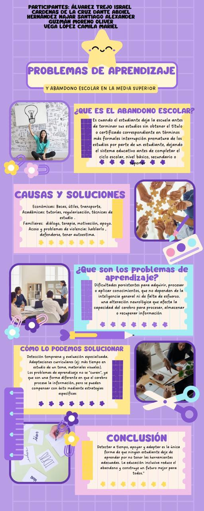

COMUNICACIÓN
YESSICA GUADALUPE MONTOYA VIDALES
En este proyecto se realizo una infografia sobre la deserción academica escolar.
despues hicimos una exposición sobre esta misma infografía que era mas enfocada a como ser un lider y evitar que amigos,familia,conocidos, etc deserten sobre sus estudios
impulsandolos y/o motivandolos para que sigan adelante con sus estudioos y tratar de apoyarlos.
tambien vimos y dimos a conocer sobre los antilideres y que es lo que hacen para ifluir a los demas para que desperdicien su vida.
<
